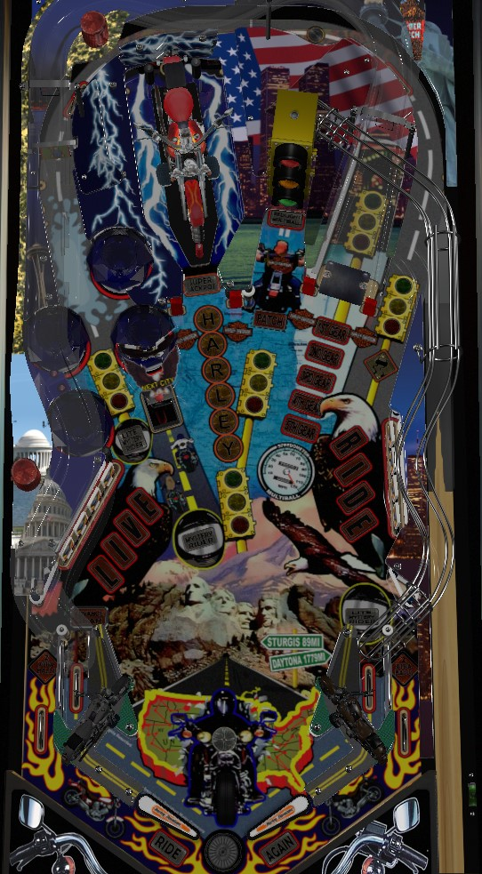

This game was designed and initially produced by Sega in 1999, but production transferred to Stern Pinball when they purchased Sega later that year. Harley-Davidson was then re-released twice in 2002-2003 as 2nd Edition and 3rd Edition. I do not believe there are any rules or scoring differences between versions. This guide was written based on the code set for 3rd Edition.
If you've memorized the video mode and are consistently able to score a perfect clear (hitting all 16 pedestrians), focus on doing that all day, because the Perfect bonus of 35,000,000 is incredibly unbalanced. Otherwise: switch hits award Miles toward Cities, or complete the drops to instantly light the scoop for Next City. 16 cities starts Milwaukee Multiball wizard mode. For standard multiballs, shoot the Motorcycle, right ramp, or any shot lit with a stoplight on the playfield to play regular multiballs; Speedometer (right ramp) and Red Light (all stoplight shots) are more valuable than Harley (motorcycle).
The skill shot is not so much of a skill shot and more of "choose your own award". There are 4 options: 10 Million, Speed Pops, Next City, and Harley Letter. Speed Pops sends the ball to the pop bumpers, where every bumper awards 3 Miles toward the next city until a non-bumper switch is hit; the other three options catch the ball on a magnet, where it is then dropped into the Big Stoplight scoop from behind and subsequently fed to the right in lane. Next City lights the Next City award at the left scoop, and Harley Letter gives progress toward spelling Harley for Harley Multiball.
The overarching goal of Harley-Davidson is to visit 16 different Cities. To visit a City, you need to collect Miles. The first City requires 75 Miles, and each subsequent City requires 20 more Miles than the previous one. The first 15 Cities are played in random order, and this has no impact on gameplay. Every scoring switch in the game awards 1 Mile. Selecting the Speed Pops skill shot award or making a full shot to the right orbit starts Speed Pops, where every pop bumper awards 3 Miles instead of 1 until the ball leaves the bumper area.
There are also 2 ways to light Next City at the left scoop, which instantly collects all remaining Miles for the current City: either select the Next City skill shot award, or complete both banks of drop targets to spell Live (to) Ride. Try to collect Next City at the scoop immediately after earning another City so that the scoop spots as many Miles as possible.
After completing a City, a Patch Hurry-up begins. Patch Hurry-ups start at 4,000,000 points and count down to 1,000,000 over about 10 seconds. Shoot the Big Stoplight scoop to collect the hurry-up, which will also award you a patch for the city. The 4th, 10th and 14th Patch Hurry-ups award an extra ball instead of points.
The 16th and final City, requiring 375 Miles, is always Milwaukee. Collecting the Miles or using Next City to reach Milwaukee awards you the Milwaukee patch for free and instantly starts Milwaukee Multiball, a 4-ball multiball wizard mode. Milwaukee Multiball is strictly timed to 80 seconds; there is unlimited ball save during this time, and all balls are allowed to drain when the time expires. During the 80 seconds, you are expected to hit the Harley motorcycle toy 24 times. Each Harley hit scores a jackpot equal to 200,000 points times the number of Patches earned on this trip through the Cities, for a maximum of 3,200,000 points. If you do succeed in hitting the bike 24 times, you get a completion bonus of 48,000,000 points. This wizard mode is unreasonably difficult, and most players will struggle to get even half of the required 24 hits. After Milwaukee Multiball ends, the City sequence and all Patches reset; you're back to needing 75 Miles for City #1 again.
Harley-Davidson comes with 3 flavors of multiball, which are all generally pretty easy to access. These 3 multiballs cannot stack with each other in any way; however, you can get one of the three running at the same time as Milwaukee Multiball wizard mode by earning your 16th and final City the "hard way" (i.e., from switch hits, not from Next City) while a multiball is running.
Harley Multiball
To qualify: shoot the motorcycle toy 6 times. The first three shots award the letters HAR and hit the motorcycle itself; after this, the motorcycle raises up, and the last three letters (LEY) are locking 3 balls.
In multiball: shoot the Harley motorcycle some more for jackpots. Jackpot value starts at 2,000,000 points and is increased by 100,000 with each drop target knocked down. After collecting 6 jackpots, the motorcycle raises up, and Super Jackpot is available at the Harley shot for about 15 seconds; the Super Jackpot value is equal to the sum of the 6 regular jackpots scored. When the super jackpot is collected or time runs out, the jackpot is reset back to 2,000,000 points and the sequence resets, with 6 more jackpots required to unlock the Super again.
Red Light Multiball
To qualify: shoot the 5 stoplight shots (both orbits, the Harley, the right ramp, and the Big Stoplight) twice each to advance them from green to yellow, then yellow to red. Any shot that advances any of the 5 stoplights scores 1,000,000 points. After advancing all 5 shots to Red, shoot the Big Stoplight to start multiball.
In multiball: do it all again. Get the stoplights from red to yellow and yellow to green by making the same 5 shots two more times each. Every shot that advances any stoplight scores a jackpot worth 2,000,000 points. Making all 10 shots lights a Super Jackpot at the Big Stoplight worth 20,000,000 points, which is not timed. Collecting the Super resets the sequence, with all regular jackpots scoring 1,000,000 more points than the previous time through. The Super Jackpot always scores 20,000,000, though.
Speedometer Multiball
To qualify: advance to 5th Gear. For the first Speedometer Multiball, you can advance a Gear by shooting the right ramp or making the left in lane. After Speedometer Multiball has been played once, you can only collect Gears from the ramp. Once you reach 5th Gear, shoot the right ramp one more time to start multiball.
In multiball: shoot anything. Each switch in the game adds 1 mile-per-hour to your speed, as indicated on the dot display. Reach the listed threshold to qualify jackpot at the right ramp. The first jackpot needs 40 miles-per-hour; each subsequent jackpot needs 20 more than the previous, but never more than 120 miles-per-hour. The jackpot starts at 10,000,000 points, and increases by 20,000 for each switch hit anywhere in the game after the jackpot has already been qualified. Collecting a jackpot does not reset its value, so the sky is the limit until multiball ends.
Hit the 4 red post targets- two on either side of the Harley, and two on either side of the right ramp- to light the 4 Harley-Davidson logos, which qualifies Video Mode at the Big Stoplight. In video mode, use the flippers to steer left and right, trying to hit pedestrians and avoid running into other cars. Your score is based on how many cars you avoid and how many people you hit, though I don't know the exact formula. The video mode is the exact same every time and can be memorized. A perfect video mode that avoids every car and hits every pedestrian scores 6,230,000 for the obstacles, plus a Perfect bonus worth an utterly ridiculous 35,000,000 points. If you know the pattern of this video mode, playing it repeatedly is the only thing you should try to do.
The right in lane briefly lights the left scoop for Mystery Rider. The left orbit solidly lights the scoop for Mystery Rider. Shoot the scoop to earn a mystery award. I have only ever seen this give points: 3,000,000, 5,000,000, or 7,000,000. Presumably it can also give other neat stuff like Miles, progress toward multiballs, extra ball, or Special, but I've never seen it happen.
Harley-Davidson has a conventional in/out lane setup. Out lanes are lit for 2 Extra Balls as a consolation if the player reaches the final ball of their game with low ball time. In lanes are lit for Advance Gear (left, only when Speedometer Multiball has not yet been played) or Light Mystery Rider (right, only when Mystery Rider is not already lit).
Bonus is calculated as 1,000,000 points plus 100,000 per Bar and Shield post target hit on that ball, plus 100,000 per drop target hit on that ball, plus 100,000 per stoplight shot advanced on that ball. There is no bonus holdover, bonus multiplier, or mid-ball bonus collect.
| If you need... | Try... |
| 1,000,000 points | ...shooting any Stoplight shot that is not already lit red. |
| 5,000,000 points | ...starting Harley Multiball, completing a City and collecting a Patch, or playing video mode with the intention of learning its pattern so you can get better at perfect clears. |
| 10,000,000 points | ...starting Speedometer Multiball and earning 1 jackpot from it. |
| 25,000,000 points | ...playing Speedometer Multiball or Red Light Multiball for a while. |
| 50,000,000 points | ...collecting a Red Light Multiball super jackpot or a perfect completion of the video mode. |
| 100,000,000 points or more | ...grinding out multiple perfect video modes or collecting multiple Red Light Multiball super jackpots. |